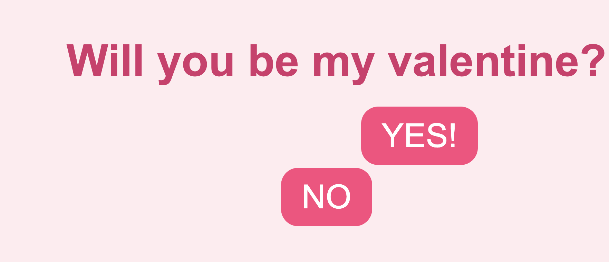

-
Valentine2025
Simple will you be my valentine project
Programming Language Used: JavaScript & HTML & CSS
Key Features: This program will force the user to select the answer YES only.
What I Learned
I've learned to random the position of the button
-
CMM WHEEL
The CMM WHEEL is a dynamic and interactive program designed for the MUIC two-day camp event.
Programming Language Used: JavaScript & HTML & CSS
Key Features: This program allows users to add participants, edit entries, and spin the wheel to determine a random winner. The wheel is visually divided into color-coded sections, each displaying a participant’s name. The center of the wheel features a logo image, and a pop-up announces the winner after each spin.

What I Learned
One of the most challenging aspects of building this project was the JavaScript implementation, particularly the logic for rendering and animating the spinning wheel. Instead of relying on a purely random spin, I used an array shuffling method to ensure fairness when selecting names.
-
CountDown Timer
A simple program that use to set and countdown time. I've reversed engineer the count down program, copy and modify some codes to build this project.
Programming Language Used: JavaScript & HTML & CSS
Key Features: Allow user to insert nunmber in decending order from hour, read those number and start countdown
What I Learned
Timer Control with Dynamic Updates: The code demonstrates how to build a functional countdown timer using JavaScript. It calculates the total countdown duration from user input and dynamically updates the timer display every 0.1 seconds using setInterval(). The update() function ensures accurate real-time formatting of hours, minutes, and seconds, allowing for smooth transitions and precise time tracking.
Input Validation and User Interaction: The validateInput() function ensures user-entered values for hours, minutes, and seconds remain within valid ranges (e.g., hours ≤ 24). It dynamically restricts input to two digits and adjusts the cursor position, creating a seamless and user-friendly editing experience. Event listeners tied to the DOMContentLoaded event apply this validation logic to editable elements, enhancing usability and preventing invalid input.
-
To Do Lists
Simple to do lists program with create and delete button
Programming Language Used: JavaScript & HTML & CSS
Key Features: Stop watch use to count time
What I Learned
Dynamic DOM manipulation allows me to create and modify web elements directly with JavaScript. In my code, I used document.createElement() to dynamically generate elements like "div" "input", and "button", customizing their properties and organizing them into a hierarchy with appendChild(). This enables interactive and dynamic page updates in response to user actions.
Event handling links user actions to specific functions. In my project, the onclick event for the delete button triggers a function to remove the task's container dynamically (taskDiv.remove()), making the application responsive and interactive. This demonstrates how events enable seamless user interaction with web applications
-
Stop Watch
Simple stop watch design with start stop and reset button
Programming Language Used: JavaScript & HTML & CSS
Key Features: Stop watch use to count time

What I Learned
I implement a stopwatch with start, stop, and reset functionalities. I uses setInterval() funtion to update the elapsed time every 10 milliseconds and dynamically formats the output into hours, minutes, seconds, and milliseconds.
-
Calculator
Standard simple calculator inspired by Apple calculator user interface
Programming Language Used: JavaScript & HTML & CSS
Key Features: Working calculator
What I Learned
I have learned how to use the built-in JavaScript function called "calculate" and created another function named "appendToDisplay" to implement it as a button.